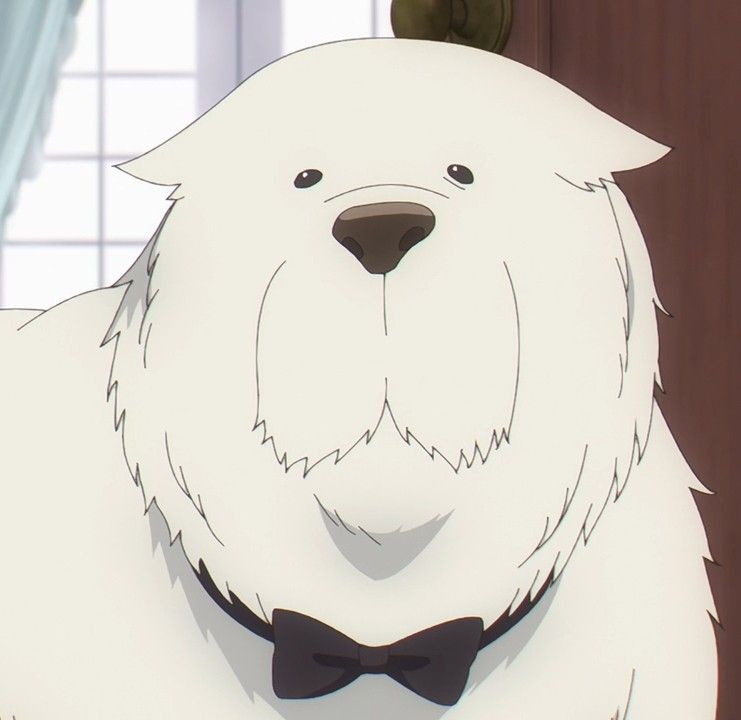

Forger Family
| ANYA FORGER |  |
|
|
Anya is driven by a desperate desire to keep her family together, fearing she'll be sent back to an orphanage if the "mission" fails. Communication Style: She frequently uses "Anya-isms," such as "Odekeke" (outing) and referring to herself in the third person. Her grades at Eden Academy are... less than stellar, mostly because she tries to read minds during tests instead of studying. Interests: Her world revolves around peanuts, the spy cartoon Spy Wars, and her stuffed chimera toy. The "Heh" Face: Perhaps her most famous trait is her smug, half-lidded smile used to provoke her classmate/rival, Damian Desmond. |
|---|---|---|---|---|
| LOID FORGER |  |
|||
| YOR FORGER |  |
|||
| BOND FORGER |  |